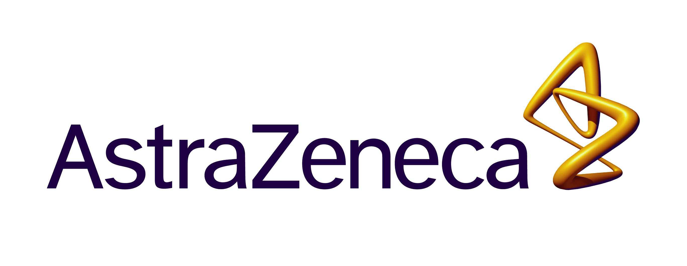
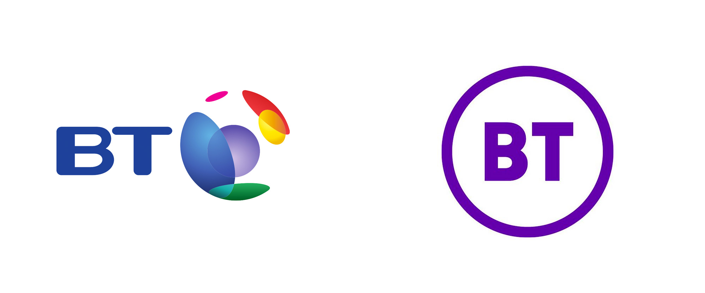

AstraZeneca

Was a part of Operations IT of Architecture Data and Intelligence (ADI)
Performed data analysis and cleanse activities for Enterprise Quality Vault ( Veeva Platform ) Project involving Vendor data extracts from SAP and performed data clustering using Open refine
Carried data governance activities on SAP MDG such as CR, File Upload, MASS Change in NWBC as a part of BAU of Global Data Team tracked through Service NOW
Worked on ZMRULE Table maintenance activities which is also a part of BAU
Created databases using Pass Through Query in MS Access by connecting to HANA PROD (ODBC) for quicker data access, created Joins of different ERP Systems on Access using SQL Commands
Exposed to LEAN Framework of Software Development Life Cycle
Worked on Azure Decommissioning activity interim data analysis tasks using advanced excel VLOOKUP, Fuzzy Lookup, Pivot etc
Had a chance to assist on implementation of location data unification initiative (Golden Record Creation) using ML based tool TAMR by creating project charter and extraction of data from SAP Systems
Had KT Sessions for WinShuttle (SAP Automation Tool)
POWER BI TASKS
• Loaded Excel flat files ( SAP Extracts ) in power BI and used Power Query (ETL) to transform data
• Connected to ODBC ( HANA PROD ) and created COO reports for materials ( Material Master Data )
• Created Matrix visual to determine data integrity of MaterialMasterData
• Loaded multiple tables and created reports consisting of Materials with multiple Supply Site consisting of visualizations such as Tree Map, Tables, Charts and Cards
IBM Watson Health
• Worked on Healthcare Data ( Insurance and Rx)
• Created Cognos reports consisting of financial, Rx and Claims Data (Monthly, Quarterly, Semi Annual and Annual Reports) with the reports consisting of Summary Table, Graphs and Charts which are drillable (drill down, drill through)
• Worked on Healthcare data for numerous clients BNY Mellon, McKinsey, Ford, Harvard University to name a few
• Performed cost-driver analysis on recurring basis on financial data generated from clients
• Advanced Excel was used to analyse the data specifically recurring deliverables to track claims, calculate premiums etc.,
• Created Trend Driver Analysis and Report which is a quarterly report covering various aspects of the Financial data (Insurance) such as KPI, YoY
• Created deliverables using Macros for repeated tasks involving the same framework by updating the data in periodic intervals from Cognos repository
• Worked on advanced BI Visualisation tool "Health Insights Explorer" which is an iteration of Cognos for highly accurate and geospatial Visualisation even at granular level using data from Health insights data warehouse
• Created COE Dashboards for different clients on an ad-hoc basis
• Used Gemini Ticketing tool for tracking the deliverables
Health Insurance
• Familiar with US Employer Health Insurance plans Medicaid, Medicare .,
• CHIP - Child healthcare insurance plan, COBRA
• HRA
British Telecom

Worked on Design and Development of RPA BOT's
used for different Network Operations carried out in
British Telecommunications EU.
Worked on Agile Development Methodology and
used JIRA for tracking the process updates.
Created BRD for the customer and Requirements
Gathering.
Prepared Test cases to ensure high level of
Accuracy of the BOT's.
Providing KT to the Developers working on
Automation.
Identifying KPIs from the given dataset.
Worked closely with Offshore SMEs to capture the
Process in order to document the design and with
Developers in a time efficient Manner.
Exposed to a wide array of Technologies which BT
uses like SMARTS, EM-OS, etc
Predominantly experienced in Blue Prism (Surface
Level Automation) as well as UI Path.